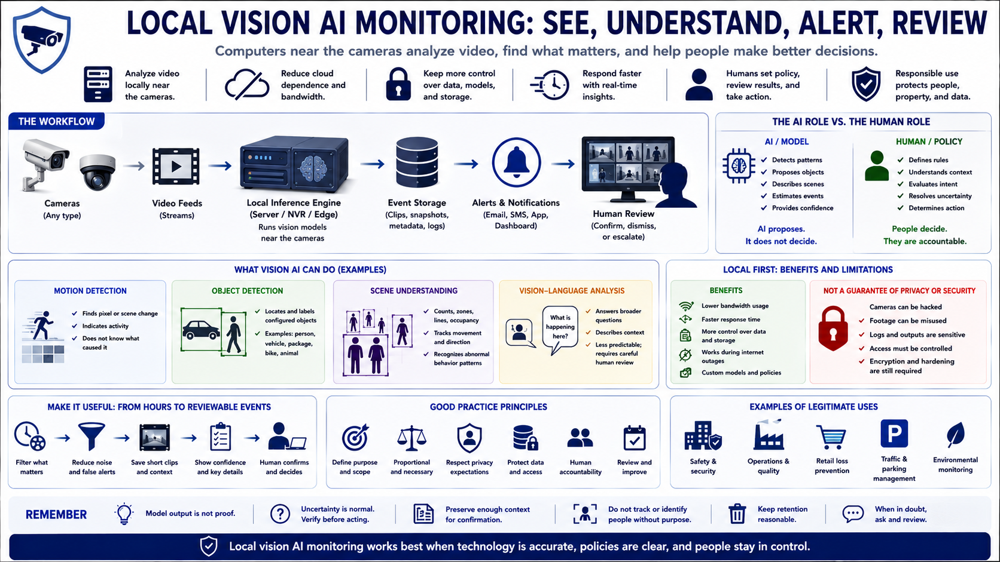

What Is Local Vision AI Monitoring?
Connecting to LMS... Progress: in progress

Narration
Local vision AI monitoring uses computers near the cameras to analyze images or video streams. A local server, workstation, network video recorder, or edge device receives frames, runs vision models, stores selected events, and supports alerts or review without requiring every video stream to be analyzed in a remote cloud.
The workflow usually combines cameras, video feeds, inference software, event storage, alert channels, and a human reviewer. The model proposes what may be present or happening; policy and people determine what the observation means and what response is appropriate.
Motion detection identifies pixel or scene change. It can indicate activity without knowing what caused it. Object detection locates and labels configured categories such as a person, vehicle, or package. Vision-language analysis can describe a scene or answer broader questions, but its output may be less predictable and requires careful review.
Local-first processing can reduce the amount of video sent to external services and give the operator greater control over storage, models, and network dependencies. Local does not automatically mean private or secure. Cameras, footage, logs, and model outputs still require policy and technical protection.
A useful system filters hours of footage into reviewable events. It should communicate uncertainty, preserve enough context for confirmation, and avoid automatically treating model output as proof of intent or identity.
This course focuses on legitimate safety, security, and operational uses. Responsible monitoring limits scope, respects privacy expectations, protects data, and keeps humans accountable for decisions.